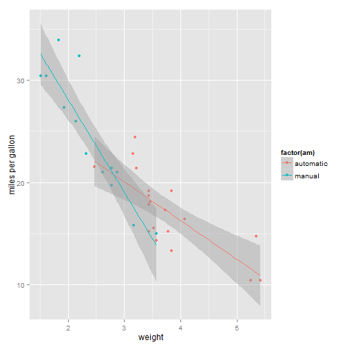

Slidify Coursera Project
Markras
Developing Data Products Project: Slidify
Introduction to the Shiny Coursera Application
The goal of the Shiny application delivered in the previous task is, as explained in the documentation, to evaluate the relationship between two variables of the mtcars dataset. The third variable "am" standing for manual or automatic transmission is predefined.
The tool allow you to:
- Better understand the shape of mtcars dataset
- Evaluate the impact of am on cars' performance
- Visualize the aforementioned relationship
Let's see some examples
Example 1: relationship between weight and miles per gallon

Example 1: relationship between horsepower and number of gears

Quiz
With this application you can quickly visualize linear regression depending on the mode of transmission in a given car. Is it awesome?
- No?
- It's fantastic!
- It's a useless crap
- It's crazy how good this app is!
It's phenomenal!
Use it and you'll see!